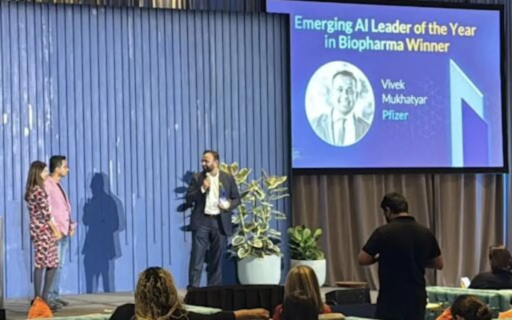

2022
The video mirage
Words became a speaking avatar
Six months before ChatGPT, a synthetic presenter proved the boundary between an idea and a made thing had moved.
 Boston · 2022 → 2026
Boston · 2022 → 2026
GenAI Chutney is the teaching surface: the model map, the benchmarks with dates, the harness diagram, and the weekly argument. Infinite Productivity is the record: the four-year arc, the rooms, the awards, the six projects, in the order they happened.
A cinematic trace of one instruction multiplying into human capability: five moments from 2022 to 2026, the conference chairmanship, forty-plus broadcasts, and the six builds — Prompt Optimizer, Medical Affairs OS, Medical Affairs Skills, ProteinLens, Gujarati Kids, KinderQuill.
Yes — the About page links straight to it. That is deliberate: the bio is a doorway, not a dead end.
Each turn changed what was possible in a working week — and what a leader was expected to know.
Six months before ChatGPT, a synthetic presenter proved the boundary between an idea and a made thing had moved.
From watching the frontier to explaining it: panels, workshops, and the first Medical Affairs conversations about what AI would change.
Reasoning models turned prompting into delegation. The job shifted from asking well to specifying precisely.
Prompt Optimizer, ProteinLens, Gujarati Kids, KinderQuill. Emerging AI Leader in Biopharma. Conference chair, Tech Tank, organisational change.
Conference chair again, a hands-on prompting workshop, and agentic systems that do the work rather than describe it. Katha and this site are the teaching layer.
Each one answers a question the day job actually asked: can this be governed, repeated, and trusted by someone who did not build it?
A better way to direct frontier models: structure, constraints and evaluation in one loop.
Governed, repeatable, evidence-aware work for teams under regulatory scrutiny.
Reusable agent skills built for scrutiny — evidence, safety, review trails.
From sequence and structure to biological meaning, in a browser.
AI in service of language and cultural continuity for the next generation.
Personalised stories for limitless young imaginations, with a grown-up in the loop.
Two consecutive years chairing AI in Medical Affairs taught me the same lesson this site is built on: the gap is never the model. It is the translation — from capability to a workflow a regulated team will actually trust, and from a demo to a number a finance team will sign.
So everything here carries its date, its source and its counter-argument. Where a number is vendor-reported, it says so. Where I do not know, there is a dash instead of a guess.

Katha Weekly is the easiest way to follow the work. For talks, workshops or the Medical Affairs systems, LinkedIn is the fastest route.